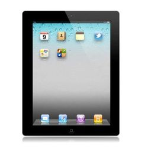
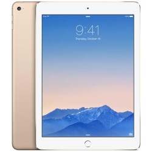
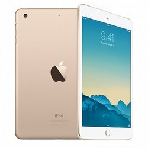

IPAD 3
Apple iPad 3 е GSM телефон с 9.70 inches (2048x1536)
Капацитивен чувствителен на допир екран,
5-мегапиксела камера плюс втора 0.3-мегапиксела
VGA камера отпред. iPad 3 поддържа Wi-Fi и GPS, Wi-Fi positioning.
Той е с големи размери и с голямо тегло.
1059 lv

IPAD AIR 2
По-лек, по-тънък, по-мощен! iPad Air 2 е вече с много по-елегантен
дизайн & разполага с уникални характеристики,
които го превръщат в още по-мощно устройство.
С 64bit процесор Α8Χ, iPad Air 2 разполага с мощността на Desktop,
като същевременно автономията на батерията остава едно от
неговите най-силни оръжия, тъй като достига до 10 часа.
Всичко е възможно на новия 9,7 Retina дисплей,
който разполага с 3.1 милиона pixels
и резолюция 2048 x 1536 за работа, gaming и забавление.
1379 lv

IPAD AIR 3
СЕРИЯ iPad mini 3
ЦВЯТ Златист
ПРОЦЕСОР Apple A7 (2-ядрен, 1.30GHz, Cyclone)
ВИДЕОКАРТА PowerVR G6430
ОПЕРАТИВНА ПАМЕТ 1GB
ЕКРАН 7.9-инчов IPS LCD мултитъч екран с LED подсветка, устойчиво на пръстови отпечатъци покритие и резолюция 2048 x 1536 пиксела
ПАМЕТ 128GB
СВЪРЗАНОСТ Bluetooth 4.0, Wi-Fi (802.11a/b/g/n/ac); dual channel (2.4GHz and 5GHz)
1499 lv